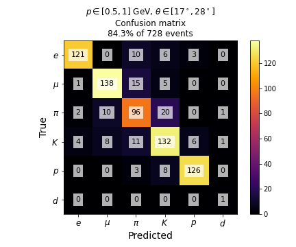

Dataset:
ParticleGun: 90k {e, mu, pi, K, p} events
ParticleGun: 13M {e, mu, pi, K, p, d} events
Data to show:
Binned in p, theta
Integrated over all p, theta
Image type:
───Standard───
Confusion
Confusion, row-normalized
Detector confusion
Detector confusion, row-normalized
Ablation confusion
Ablation confusion, row-normalized
Ablation confusion: change
Accuracy
Ablation accuracy
Ablation accuracy: change
───Weighted───
Weights
Confusion, weighted
Confusion, row-normalized, weighted
Detector confusion, weighted
Detector confusion, row-normalized, weighted
Ablation confusion, weighted
Ablation confusion, row-normalized, weighted
Ablation confusion: change, weighted
Accuracy, weighted
Ablation accuracy, weighted
Ablation accuracy: change, weighted
p: [0.5, 1.0] GeV
theta: [17°, 28°]